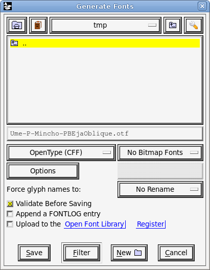

PBE-ja に日本語斜体フォントを導入する手順
2012-12-13 堀内寛己
1. 問題
PBE の原文では、要所でイタリック体が使われています。
しかし、日本語フォントにはイタリック体はありませんし、TeX は、通常のフォントを動的に傾けてイタリックの代用にはしません。 すると
PBE
日本語版では、イタリック体の欧米文字と直立体の日本語文字が混ざって一部不自然に見えたり、原文にあった「強調」の意図が損われたりすることがありました。
- x ページ
-
- 期待:
-
Smalltalk を再発明 すべきだ
- 実際:
- Smalltalk を再発明すべきだ
- xii ページ
-
- 期待:
-
3 +
4 → 7
- 実際:
-
3 +
4 → 7 を選択して を選ぶと が得られる
- 期待:
- 次の章へと読み進めましょう!
- 実際:
-
次の章へと読み進めましょう!
以降では、この問題に対策が必要だとして話を進めます。
1の PDF
プレビュー
2. 生成された斜体フォントによるイタリック体フォントの代用
最近の Web ブラウザーは、イタリック指定されている箇所に日本語文字が来ると、動的に斜体フォントを生成してレンダリングします。 本
HTML でもその事実を利用しています。 堀内は、このようにしてイタリック体フォントを代用することを、この問題に対する無難な対策だと考えています。
ただし、前述したように TeX には動的に斜体フォントを生成する機能はありません。
そこでツールを使って、オリジナルのフォントを傾けて斜体のフォントをあらかじめ用意しておくことになります。
3. 生成済み斜体フォント
5 の手順で生成されたフォントを、PBE-ja のリポジトリに置きました(umefont-unofficial-oblique.zip)。
これを PBE 日本語版に取り込むには、OS 標準の方法でフォントをインストールし、common.tex に以下のように書きます。
\setmainjfont[ItalicFont=Ume-P-Mincho-PBEjaOblique,BoldFont=IPAexGothic]{IPAexMincho}
\setsansjfont[ItalicFont=Ume-P-Gothic-PBEjaOblique]{IPAexGothic}
- Mac OS X 標準の PDF
ビューワーは、梅フォントの明朝体の斜体を「細く(薄く?)」表示します。これは致命的かもしれません。
- Mac OS X や Linux
で、フォントの置き場所をユーザー領域からシステム領域に変更すると(あるいはその逆)、LuaLaTeX
がフォントを見つけられなくなることがあります。その場合は ~/.texlive* を削除します。
- Mac OS X では、フォントをインストールしても Font Book
に反映されないことがあります。その場合はいったんログアウトすると直るようです。理由はわかりません。
4. 斜体フォントの生成ツール
既存のフォントから機械的に斜体フォントを生成するためには、fontforge
というツールを使う方法が知られています。fontforge は GUI のプログラムで、Windows 版、Mac
版のバイナリーも存在します。ただし、移植された X Window システムを使っていることもあって、少し不便なので注意してください。
注意: Windows の fontforge
は多言語化に失敗しているようで、事実上使い物になりません。
5. fontforge を使って斜体の梅フォントを生成する
ここではライセンス問題を気にして、IPA フォントの斜体ではなく梅フォントの斜体を生成します。手順は、IPA
フォントの場合もほぼ同じです。
5.2 ベースにするフォント
- 明朝体
- ume-pmo3.ttf (Ume-P-Mincho)
- ゴシック体
- ume-pgo4.ttf (Ume-P-Gothic)
5.3 fontforge を操作する
5.3.1 すべての文字を選ぶ
Edit → Select → Select All
5.3.2 傾ける
Element → Style → Oblique...
明朝体とゴシック体で適切な角度が違うので注意:
- 明朝体:
- -8°
- ゴシック体:
- -12°
5.3.3 名前を変更する
Element → Font Info... → PS Names で
- Fontname:
- Ume-P-Mincho-PBEjaOblique
- Name For Humans:
- Ume P Mincho PBEjaOblique
Element → Font Info... → OS/2 で
- OS/2 Version:
- 2
Element → Font Info... → TTF Names で
- English (US) 以外の UniqueID:
- 削除
- UniqueID:
- Ume P Mincho PBEjaOblique
- すべての Styles (SubFamily):
- PBEjaOblique
- English (US) 以外の Fullname:
- ‘ PBEjaOblique’ を末尾に追加

5.3.4 フォントをエクスポートする
File → Generate Fonts...

エラーが出るがそのまま Save。
5.3.5 File → Close
通常は Don't Save。